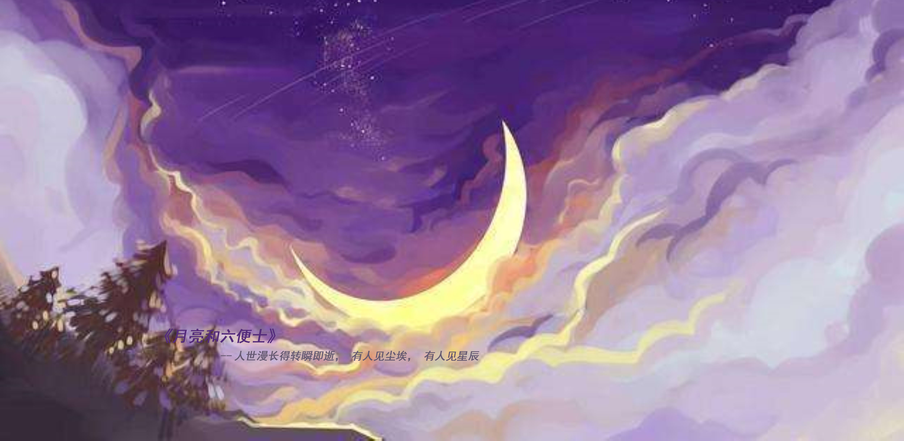
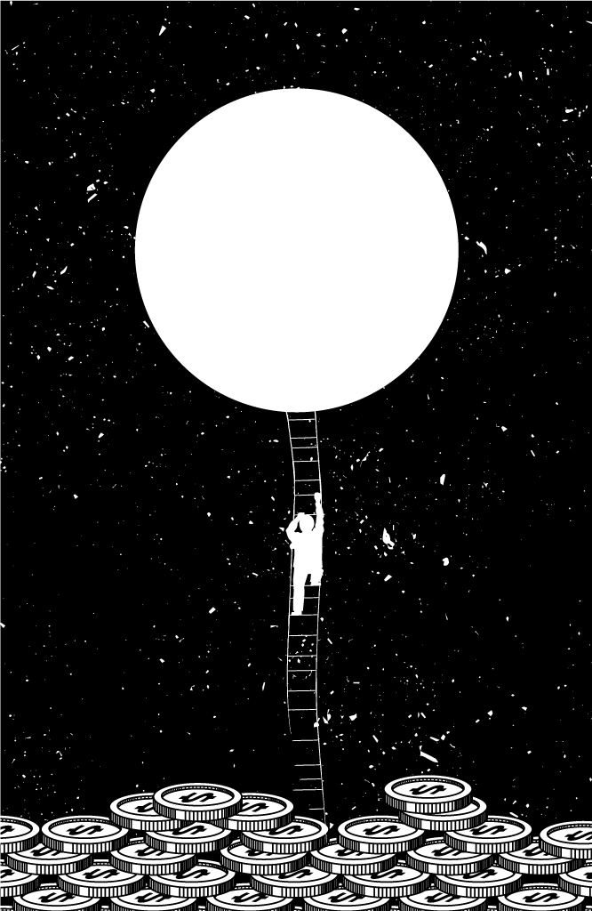
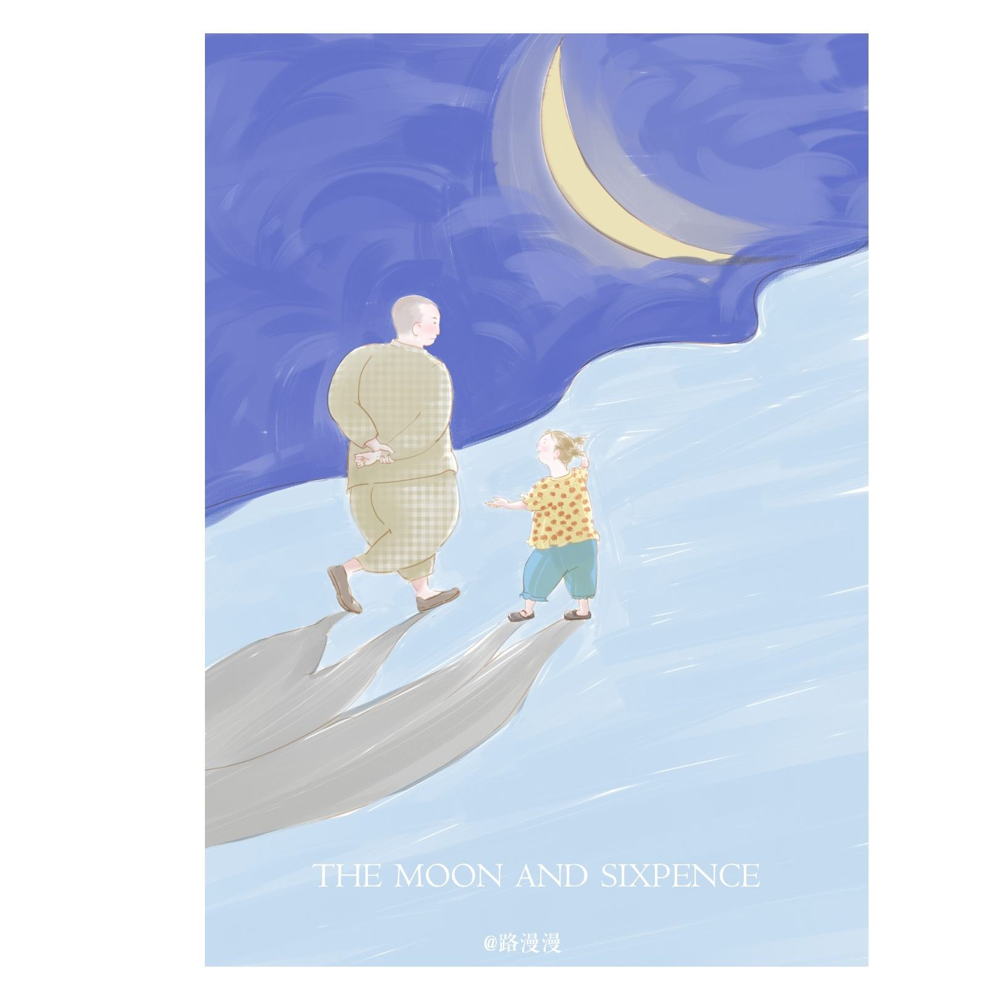
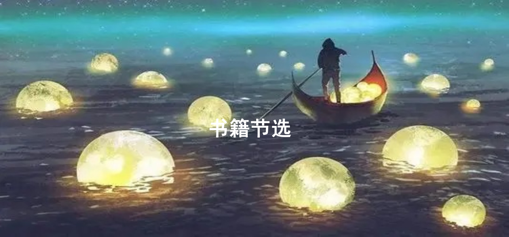
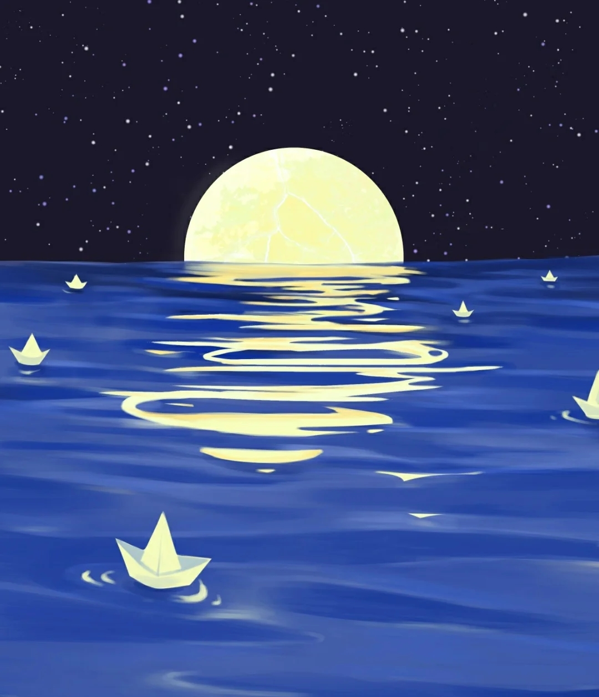
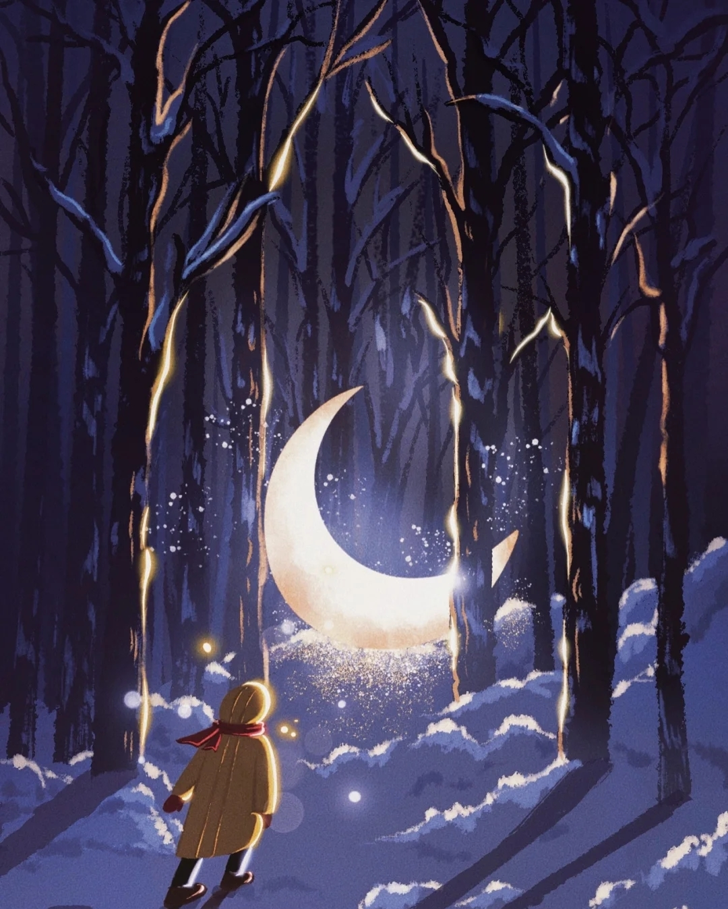
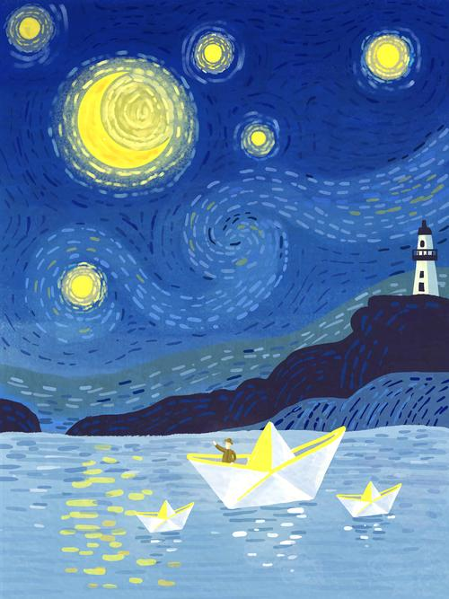

书籍推荐
 《月亮和六便士》是英国小说家威廉·
萨默赛特·毛姆的创作的长篇小说，成书于1919年。
作品以法国后印象派画家保罗·高更的生平为素材，描述了一个原本平凡的伦敦证券经纪人思特里克兰德，突然着了艺术的魔，抛妻弃子，绝弃了旁人看来优裕美满的生活，奔赴南太平洋的塔希提岛，用画笔谱写出自己光辉灿烂的生命，把生命的价值全部注入绚烂的画布的故事。
贫穷的纠缠，病魔的折磨他毫不在意，只是后悔从来没有光顾过他的意识。作品表现了天才、个性与物质文明以及现代婚姻、家庭生活之间的矛盾，有着广阔的生命视角，用散发着消毒水味道的手术刀对皮囊包裹下的人性进行了犀利的解剖，混合着看客讪笑的幽默和残忍的目光。
《月亮和六便士》是英国小说家威廉·
萨默赛特·毛姆的创作的长篇小说，成书于1919年。
作品以法国后印象派画家保罗·高更的生平为素材，描述了一个原本平凡的伦敦证券经纪人思特里克兰德，突然着了艺术的魔，抛妻弃子，绝弃了旁人看来优裕美满的生活，奔赴南太平洋的塔希提岛，用画笔谱写出自己光辉灿烂的生命，把生命的价值全部注入绚烂的画布的故事。
贫穷的纠缠，病魔的折磨他毫不在意，只是后悔从来没有光顾过他的意识。作品表现了天才、个性与物质文明以及现代婚姻、家庭生活之间的矛盾，有着广阔的生命视角，用散发着消毒水味道的手术刀对皮囊包裹下的人性进行了犀利的解剖，混合着看客讪笑的幽默和残忍的目光。
《月亮和六便士》是英国小说家威廉·
萨默赛特·毛姆的创作的长篇小说，成书于1919年。
作品以法国后印象派画家保罗·高更的生平为素材，描述了一个原本平凡的伦敦证券经纪人思特里克兰德，突然着了艺术的魔，抛妻弃子，绝弃了旁人看来优裕美满的生活，奔赴南太平洋的塔希提岛，用画笔谱写出自己光辉灿烂的生命，把生命的价值全部注入绚烂的画布的故事。
贫穷的纠缠，病魔的折磨他毫不在意，只是后悔从来没有光顾过他的意识。作品表现了天才、个性与物质文明以及现代婚姻、家庭生活之间的矛盾，有着广阔的生命视角，用散发着消毒水味道的手术刀对皮囊包裹下的人性进行了犀利的解剖，混合着看客讪笑的幽默和残忍的目光。
书评|《月亮与六便利》：我并不讨厌失败，我只是讨厌不去尝试。
追逐梦想就是追逐自己的厄运，在满地都是六便士的街上，他抬起头看到月光
一个英国证券交易所的经纪人，本已有牢靠的职业和地位、美满的家庭，但却迷恋上绘画，像“被魔鬼附了体”，突然弃家出走，到巴黎去追求绘画的理想。他的行径没有人能够理解。他在异国不仅肉体受着贫穷和饥饿煎熬，而且为了寻找表现手法，精神亦在忍受痛苦折磨。经过一番离奇的遭遇后，主人公最后离开文明世界，远遁到与世隔绝的塔希提岛上。他终于找到灵魂的宁静和适合自己艺术气质的氛围。他同一个土著女子同居，创作出一幅又一幅使后世震惊的杰作。

在他染上麻风病双目失明之前，曾在自己住房四壁画了一幅表现伊甸园的伟大作品。但在逝世之前，他却命令土著女子在他死后把这幅画作付之一炬。通过这样一个一心追求艺术、不通人性世故的怪才，毛姆探索了艺术的产生与本质、个性与天才的关系、艺术家与社会的矛盾等等引人深思的问题。同时这本书也引发了人们对摆脱世俗束缚逃离世俗社会寻找心灵家园这一话题的思考，而关于南太平洋小岛的自然民风的描写也引人向往。


我们每个人生在世界上都是孤独的。每个人都被囚禁在一座铁塔里，只能靠一些符号同别人传达自己的思想；而这些符号并没有共同的价值，因此它们的意义是模糊的、不确定的。我们非常可怜地想把自己心中的财富传送给别人，但是他们却没有接受这些财富的能力。因此我们只能孤独地行走，尽管身体互相依傍却并不在一起，既不了解别的人也不能为别人所了解。我们好象住在异国的人。对于这个国家的语言懂得非常少，虽然我们有各种美妙的、深奥的事情要说，却只能局限于会话手册上那几句陈腐、平庸的话。我们的脑子里充满了各种思想，而我们能说的只不过是象“园丁的姑母有一把伞在屋子里”这类话。
-最后-

-只有诗人和圣徒才能坚信，在沥青路面上辛勤浇水会培植出百合花来。-

“真幼稚。如果你不在乎某一个人对你的看法，一群人对你有什么意见又有什么关系？”

-为了使灵魂安宁，一个人
每天至少该做两件他不喜欢的事。-
-卑鄙与高尚，邪恶与善良，仇恨与热爱，可以并存于同一颗心灵中。-
我们可悲地想对他人传达我们内心的珍贵，但他们却无法接收的能力，因此我们终究孤独，比肩而立却不同行，无法了解对方也无法让对方了解。我们就像住在语言不熟的国度里，心中虽有各种美妙深刻的事情想说，却无奈只能吐出对话手册上的陈腔滥调。
2022@weizhishequ.com
组长: 陈刚 策划：梅卓航 执行人:王鑫圆、邹剑波